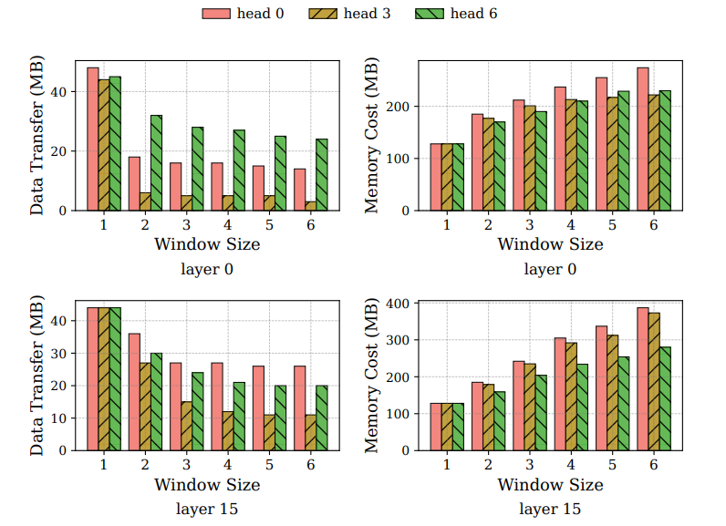
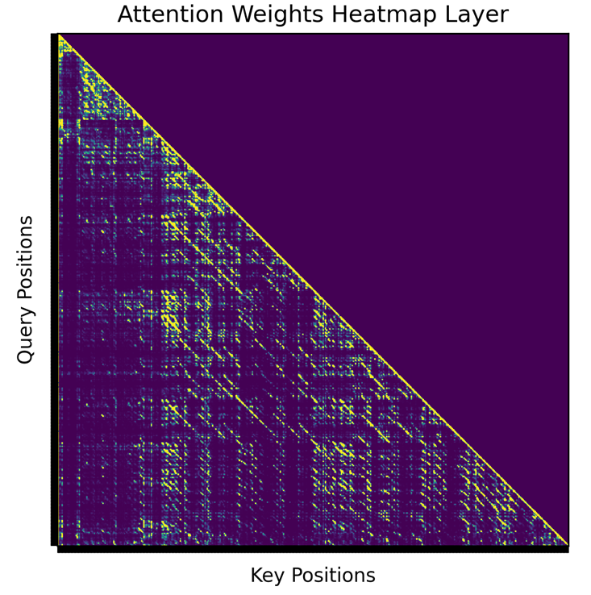
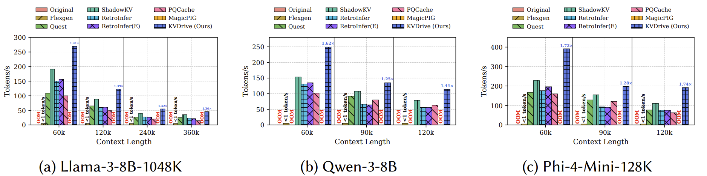

核心思想
本次 PQE 英文汇报以“Beyond GPU Memory”为主题，围绕长上下文大模型推理中的 KV Cache 管理，串联代表性工作、KVDrive 的已有机制与后续研究计划。
KV 复用 · 把有限 HBM 留给更有价值的数据
稀疏解码的相邻步骤可能重复选择同一批 KV。KVDrive 根据不同层、不同注意力头的复用差异分配 GPU 缓存预算，并利用当前注意力信息指导淘汰，减少 HBM、DRAM 与 SSD 之间的重复传输。
微批流水线 · 重叠选择、查找与传输
将 KV 准备过程拆成微批，让不同微批的 GPU 选择、CPU 查找和 I/O 传输并行推进；完整批次所需 KV 就绪后再执行计算，缓存更新可与计算重叠。同时联合调整缓存与微批大小，平衡资源占用。
分层存储 · 协同利用 HBM、DRAM 与 SSD
Prefill 阶段利用注意力重要性初始化 KV 放置，让更可能复用的数据进入较快层级。Decode 阶段结合面向 SSD 的数据布局、DRAM 缓存、可复用的固定页内存缓冲区和异步传输，利用 GPU 之外的容量，并降低暴露在计算路径上的等待。
汇报主线：先减少重复搬运，再重叠剩余搬运，最后协调各存储层的数据放置与读取；目标是把 HBM 之外的容量转化为更高推理吞吐和更少 KV 等待。
后续研究方向
以下三个方向来自 PPT 的研究计划，由主讲人林健汇报，均为待验证设想；示意图中的读取与等待场景用于解释权衡，不能视为已测得的 KVDrive 故障或性能结论。
按当前 miss 与实际 I/O 成本调整读取分组
- 怎么做
- 在缓存查找后，结合当前缺失 KV 的物理分布与实测读取成本，决定哪些块合并读取，在 I/O 次数与额外读取字节之间取得平衡。完整获取已选中的 KV，额外读入的数据不参与本次注意力计算。
- 先验证
- 比较不同访问模式和设备上的 I/O 次数、传输字节数、读放大与注意力等待时间，检验减少请求数是否真正降低总读取成本。
根据传输时延决定 KV 预取时机
- 怎么做
- 在线更新 KV 复用预测与各层级传输耗时，在内存和带宽预算内提前将可能需要的数据从 SSD 暂存到 DRAM；实际选择后，仅把必需 KV 搬入 HBM，并补齐缺失项。
- 先验证
- 检查预取数据能否在计算前就绪，并观察多余预取带来的内存和带宽占用。预测正确仍可能因启动过晚而产生等待，需要同时评估预测内容与提前量。
KVDrive 已支持 warm-up 与异步预取；拟扩展的是解码过程中对预测和提前量的在线调整。
跨请求协调紧急读取、后台预取与就绪计算
- 怎么做
- 跟踪 KV 位置、I/O 队列、请求进度与时延目标，优先安排待处理的紧急读取，限制带宽拥塞时的后台预取；当某个请求等待数据时，执行 KV 和计算依赖均已满足的其他请求。
- 先验证
- 在共享 I/O 的多请求负载下，同时比较吞吐、等待时间与尾延迟，检查总体吞吐提升是否伴随个别请求等待过长。
老师意见（Comment）
老师对 PPT 的内容基本认可，但对本次演讲表现不够满意。主要问题是对汇报内容还不够熟悉，影响了讲解的流畅度；英语口语也需要坚持每天练习，进一步提升英文表达能力。
意见回复与改进安排
感谢老师的指导。我会多花时间熟悉汇报内容，逐页梳理研究背景、关键机制、实验结果和后续计划，反复练习讲解与衔接。同时，我会与张婕师姐讨论 PPT 内容的修改，进一步理顺内容逻辑与表达。英语口语方面，我会坚持每天练习，并结合英文汇报进行完整试讲，提高表达的流畅度和对内容的掌握程度。
补充图与数据
展开 KVDrive 机制说明、结果与 3 张 PPT 原图
缓存分配：PPT 第 9–10 页以相邻解码步骤的 KV 复用为动机，展示不同层、不同注意力头中缓存窗口大小对传输量与显存开销的影响。离线分析结合 MCKP 优化器分配二维缓存窗口；解码时使用访问历史和当前注意力信号指导淘汰。“Lookahead”不表示预先知道未来查询。


流水线依赖：PPT 第 14 页的重叠来自不同微批处于不同准备阶段；同一微批仍需先选择、再查找缺失项、再获取数据。完整批次的数据就绪后才执行该批次计算，不能跳过依赖。
跨层放置：PPT 第 17 页利用 Prefill 注意力信息初始化 KV 放置。DRAM 保留可复用数据，避免每次 GPU miss 都触发 SSD 读取；可复用的固定页内存缓冲区支持高效传输，减少重复分配。


汇报结果：PPT 第 18 页及演讲备注报告，在所展示的 H20 与 RTX 4090 实验中，KVDrive 的吞吐最高达到各配置下最佳受测基线的 1.74 倍；图中覆盖 Llama-3-8B-1048K、Qwen-3-8B 与 Phi-4-Mini-128K。备注提及使用 RULER、LongBench 评估模型质量，本页未给出具体分数，因此不据此补写精度结论。


内容来源：《KVDrive PQE Presentation — English.pptx》，共 26 页，含演讲备注；代表性工作包括 ShadowKV、Quest、RetroInfer 与 FlexGen，本文按 PPT 的讨论范围归纳。第 12–13 页的对比针对特定执行变体，其中 RetroInfer 变体关闭了 attention estimation，不能据此概括原系统的全部能力。老师意见及回复依据用户补充整理，回复中的改进事项为后续计划；张婕师姐为拟讨论内容修改的对象。
来源与说明
《KVDrive PQE Presentation — English.pptx》（26 页及演讲备注）；老师意见与回复依据用户补充，归档日期按本次整理日期 2026-11-18 记录。网页按所列材料与用户补充整理，研究设想和验证安排不表示已完成实验；引用图版权归原作者。
查看来源与使用说明 →